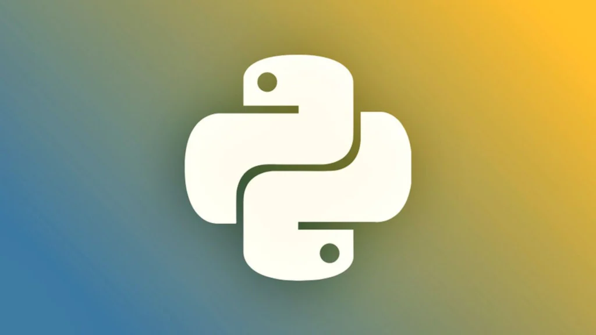
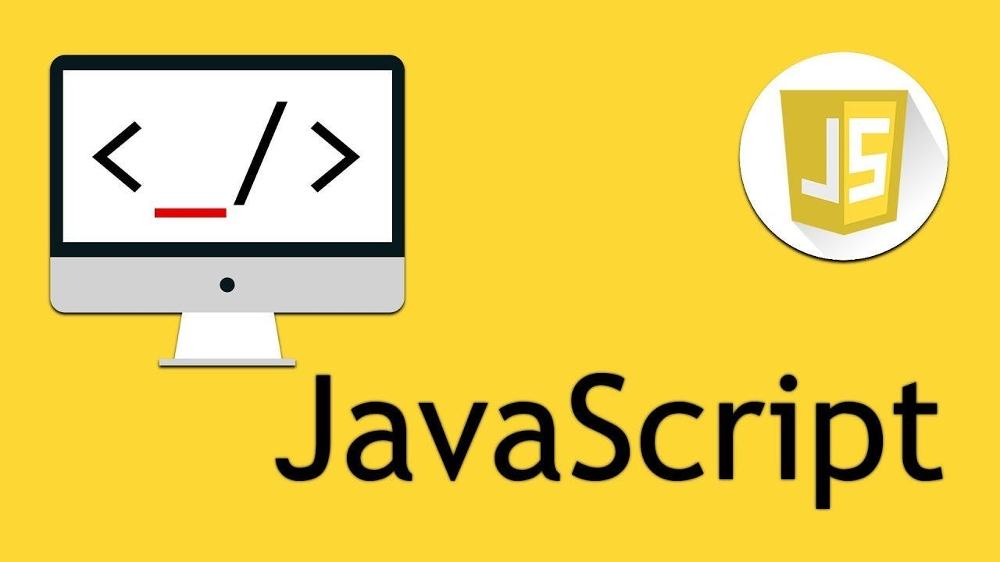

Python 3.12: Novidades e Melhorias
Publicado em 23 de Fevereiro de 2024

A nova versão do Python trouxe melhorias significativas no desempenho e novas funcionalidades que todo desenvolvedor deveria conhecer. Vamos explorar as mudanças mais importantes.
O Python 3.12 introduz melhorias fantásticas para f-strings, fornecendo maior flexibilidade e expressividade na formatação de strings. Essas melhorias são formalizadas no PEP 701 , que traz mudanças sintáticas para f-strings, removendo limitações anteriores e tornando f-strings ainda mais poderosas
Algumas das principais novidades incluem:
Desempenho: Melhorias significativas na velocidade de execução, tornando o Python mais rápido
Anotações de tipo: Uma nova sintaxe para classes e funções genéricas, além de uma nova instrução "type" para criar aliases
Mensagens de erro: Melhorias nas mensagens de erro, com sugestões e orientações úteis
F-strings: Suporte para f-strings mais expressivas, com a possibilidade de aninhá-las arbitrariamente
Otimizações: Otimizações, incluindo compreensões embutidas, para um Python mais rápido
Novas bibliotecas: Novas bibliotecas e módulos, como o módulo "tomllib" para leitura de arquivos TOML
Depreciações: Algumas funções e módulos foram depreciados, como o módulo "distutils" e a função "assertEquals"
Melhorias de segurança: Melhorias na segurança, incluindo suporte para algoritmos de hash mais seguros
Suporte a novos padrões: Suporte para novos padrões, como o padrão de codificação UTF-8 por padrão
Perf profiler: Suporte para o perf profiler no Linux
Tamanho de objetos: O tamanho base de um objeto passou de 208 bytes para 96 bytes, o que permite que mais objetos vivam na memórias
Avaliação Postergada de Anotações: PEP 563
Coerção de localidade C legada: PEP 538
Modo de tempo de execução UTF-8 forçado: PEP 540
breakpoint() embutida: PEP 553
Nova API C para armazenamento local de thread: PEP 539
Suporte a WebAssembly: O Python 3.12 agora suporta WebAssembly, permitindo que você execute código Python em navegadores e ambientes de execução WebAssembly
Essas são apenas algumas das novidades que o Python 3.12 traz para a mesa. Se você é um desenvolvedor Python, vale a pena conferir as melhorias e como elas podem beneficiar seu trabalho.
Para mais detalhes, consulte a documentação oficial do Python 3.12.
Leia mais
JavaScript Moderno: ES2023 Features
Publicado em 21 de Março de 2024

Conheça as novas features do JavaScript que chegaram com o ES2023 e como elas podem melhorar seu código e produtividade.
O JavaScript é uma linguagem em constante evolução, e a versão ES2023 trouxe várias melhorias e novas funcionalidades que tornam o desenvolvimento mais eficiente e agradável. Vamos explorar algumas das principais novidades.
Métodos de array: Novos métodos de array, como toSorted, toReversed, toSpliced, findLast e findLastIndex
Hashbang (Shebang): Permite a execução de scripts diretamente a partir da linha de comando usando
Símbolos como chaves de WeakMap: Permite o uso de símbolos únicos como chaves
GroupBy e groupByToMap: Simplifica transformações de dados complexas, tornando o código mais fácil de ler e manter
Symbol.prototype.description: Fornece insights sobre os valores de símbolo, ajudando no debugging
Support Hashbang Grammar: Torna os scripts JavaScript mais portáteis e mais fáceis de executar em diferentes ambientes
Essas funcionalidades contribuem para uma linguagem mais versátil e eficiente.
Os benefícios das novas funcionalidades do ES2023 incluem:
Melhoria da legibilidade do código
Melhor desempenho
Prevenção de bugs causados por mutações acidentais
Melhoria do debugging
Portabilidade
Expansão das capacidades da linguagem
Melhoria da experiência do desenvolvedor
Código mais eficiente
Leia mais